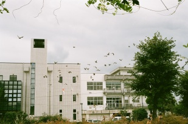

analog après-midi
pentax mz-10 (prime 50mm smc type-a f/1.7, zoom 35-80mm f/4 type-f). film is mostly fuji superia 400 and kodak gold 200.
無人駅
東山北駅
Station on the gotemba line
Battleship at sunset
横須賀港
Ship is a JMSDF vessel? The shell is loaded onto a huge cannon that could apparently shoot projectiles to haneda airport from its location at verny park.
堯天花見
円覚寺、北鎌倉
plum (?) flowers just beginning to bloom near engakuji, mid january. taken at 7am before the temple opens after participating in a meditation session.
Enoden upward terminus
鎌倉駅、鎌倉
Enoden single-line tracks at Kamakura terminus.

North Chiyoda at noon
千代田区、東京
North side of Chiyoda-ku, on the way to the museum of modern art.
箱根駅伝
蒲田
Shot of runners during the 2023 hakone ekiden, Jan 3rd, soon after they pass Keikyuu Kamata station.
お台場の山手線
東京ビックサイト、お台場
Taken at Comiket101. Guy is dressed up as gojou from jujutsu kaisen wearing a yamanote line headress??? No clue what's going on here. Tokyo big sight in the background at sunset near the end of day 2.
One view of Yuigahama
鎌倉
View of kamakura city's yuigahama coastline from the observation deck at Hasedera near Hase station on the Enoden.
flowers in winter
宝戒寺、鎌倉
Flowers in winter on the side path at houkaiji in kamakura. taken during a prep trip for a volunteering activity.
からくれなゐに
奈良公園
Stream in nara park.
寺巡り
京都、清水
Crowded road in Gion near kiyomizudera.
Clear water
京都、清水寺
奉納
京都、伏見稲荷
Fall foliage on inariyama, while walking through the 千本鳥居.
House in Nara
奈良
Truly just a random house. Snapped while walking to toudaiji after taking the wrong bus for a few kilometers.
東大寺
奈良
Toudaiji, the top attraction in Nara. Really lives up to the hype, it's very cool. Inside the main chamber is the largest bronze buddha statue (i think) and a little museum of sorts. The pillar with the hole you crawl through was closed.
修学旅行
奈良、東大寺
Gate leading up to toudaiji in nara. only had my 50mm lens with me on this trip so there was no chance i was getting it all in frame.
Kiyomizu
京都清水
Entry to the road that begins up the hill to Kiyomizudera.
Rock garden
京都、龍安寺
Maybe one of the most famous rock gardens, at Ryuuanji. Just one rock of many. The entrance fee to this temple is waaaay to high...
散華、秋。
京都
Inside the garden behind kinkaku-ji
Ferry leaving for miura
千葉県浜金谷鋸山
Ferry that brought me to chiba leaves for Kurihama Port, visible in the distance. Taken from the top of nokogiriyama, reached by ropeway cable car.
Shibuya before sunset
渋谷
Part of the same trip as the previous tokyo photos.
明治通り
原宿
Crowded day in harajuku. Taken on the way to the gingko trees at the 外苑.
参道
原宿
Harajuku station right outside meiji shrine on the 表参道.
Early colors in shinjuku
西新宿
Tokyo metropolitan building. The left side tower has an observation deck on the 45th floor. Great views of central tokyo and yoyogi/shinjukugyoen.
夕焼け
東京湾
beautiful sunset on the way back to Kurihama
Sea and air
東京湾
Taken from the Tokyo-bay ferry
Shrimp chips
東京湾
Man throwing shrimp chips at seagulls that have learned to fly behind the boat to get fed. They're shockingly good at catching them out of midair!

Kurihama port
久里浜
Taken right before getting on the Tokyo-bay ferry across to Kanaya in Chiba
Golden cosmo
横浜
Yokohama ferris wheel right before sunset.
FriendSHIP day
横須賀
Friendship day in Yokosuka. Navy base is opened to the general public. The line was exceedingly long, stretching all the way from the central station to Mikasa park, where this photo was taken. Fireworks ensued after sunset.
Yokohama station
横浜
JR tower above Yokohama station, west exit. On top of the tower is the famous rooftop garden with the Yokohama sign.

beach at yuigahama
鎌倉
Beach close to yuigahama station on the Enoden line. The sky was absolutely beautiful, but it was extremely windy.

first hint of blue
鎌倉
coming down the hill from zuisenji. clouds just starting to clear up
雨上がりの太陽
鎌倉
Zuisenji. Sun came out of the clouds for the first time that day while I was there.

瑞泉寺
鎌倉
Zuisenji. One of the less-visited temples in the area, but maybe my favorite yet?

garden at the foot of kinpeizan
鎌倉
very cool looking leafless trees. there are SO many absolutely lethal looking spiders on this path though...

someone's flowers
鎌倉

妙隆寺
鎌倉
Smaller temple very close to kamakura station.
literature club
横須賀
flock of birds in front of the yokosuka city library. Spontaneous shot.

seaside line
横浜金沢
train on the seaside line bound for kanazawahakkei station. the pyramid in the distance is the aquarium on Hakkeijima. I believe the tower on the right is an observation tower in the amusement park there.

cosmos field
くりはま花の国
Cosmos, also known as 秋桜 [akizakura], fall cherry blossoms.

park exit
上野
Park exit of ueno station, my favorite train station yet!! To the left out of frame is the museum for western art. Behind me is the 文化会館 where there are musical performances. Ameyoko, taken in a previous picture is down a hill to the right.

oncoming traffic
横浜
Northbound keikyuu train for shinagawa as seen from the front of a southbound train for misakiguchi. Rainy weather thanks to Typhoon 15.

enjoying the view!
鎌倉
Bird seems to like the attention it gets sitting over there. Near Engakuji.

incense burner
鎌倉
Gate to Kenchouji. Tree on the left is apparently 800 years old and planted when the temple was built.
商店街
アメ横
Shopping district near Ueno park.

建長寺
鎌倉
Kenchouji in kamakura. Probably the biggest temple there?
hospital stairs
横須賀
Stairs at the Yokosuka city hospital
keikyuu overpass
横須賀
Southbound train for misakiguchi leaving yokosukachuo
電線
鎌倉
Near 建長寺